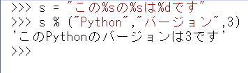

第8回.文字列操作（str型）
プログラミングでは文字列（テキスト）を扱う事は非常に多く最も基本的な処理と言えます。
Pythonでは文字列はstr型になります。
このstr型に対する操作として非常に多くの機能がPythonには用意されています。
目次
文字列リテラル
'シングルクォートと"ダブルクォート
このサイトのメインコンテンツがVBAなので、"ダブルクォートにしておいた方が都合がよいというだけの理由です。
エスケープ文字
"ダブルクォートを使った場合は、"ダブルクォート
'シングルクォートを使った場合は、'シングルクォート
これらの文字を文字列中に記述する場合は、エスケープ文字を使う必要があります。
その他、特殊文字にもエスケープ文字が必要になります。
| \' | シングルクォート |
| \" | ダブルクォート |
| \t | タブ |
| \n | 改行 |
| \r | キャリッジリターン |
| \\ | バックスラッシュ |
※この他にも用意されていますが、普通に使うと思われるものを抜粋しました。
s = "Pythonの\nエスケープ文字の\"\\\"について"
print(s)
\"："
\\：\
raw文字列
s = r"Pythonの\nエスケープ文字の\"について"
print(s)
三連クォート
三連クォートの間は、タブや改行やクォートが文字列として扱われます。
また、三連クォートの間はインデントも適用されません。
s = """Pythonの
"エスケープ文字"の'\\'について"""
print(s)s="test"
""" 三連クォートをコメントとして使います。
これはコメントです。
"""
print(s)文字列演算子
+演算子
*演算子
%演算子
s = "この%sの%sは%dです"
print(s % ("Python","バージョン",3))
| %d | 符号付き 10 進整数。 |
| %i | 符号付き 10 進整数。 |
| %f | 10 進浮動小数点数。小数以下の0が常に含まれます。 |
| %F | 10 進浮動小数点数。小数以下の0が常に含まれます。 |
| %s | 文字列 |
inとnot in
inとnot inはlistと型同様にstr型にも適用されます。
inは、含まれていればTrue
not inは、含まれていなければTrue
文字列のインデックスとスライス
文字列のインデックス
| P | y | t | h | o | n |
| 0 | 1 | 2 | 3 | 4 | 5 |
| -6 | -5 | -4 | -3 | -2 | -1 |
文字列[index]
文字列のスライス
スライスの指定は、
文字列[start:stop]
文字列[start:stop:step]
stopには文字数（最大インデックス+1）まで指定する場合が出てきます。
stepは飛び飛びで取得する場合に使用します。
インデックス範囲外の数値を指定してもエラーにならず、有効な範囲内の文字が取得されます。
format()関数
引数の値を指定した書式文字列で変換して返します。
format_specには、書式指定文字列を指定します。
print(format("右詰め","*>10")) #右詰め*埋め
print(format("中央寄せ","^10")) #中央寄せ空白埋め
print(format(12345,",")) #カンマ区切り
print(format(12.3456,".2f")) #小数2桁で丸め
print(format(0.1234,".2%")) #%で小数2桁format()メソッド
文字列中の{}が、引数に指定された値に置換されます。
以下の機能があります。
・渡した順に置換
・位置を指定して置換
・キーワード指定して置換
・:コロンに続けて書式指定
print("{}と{}と{}".format("a","b","c")) #渡した順に置換
print("{2}と{0}と{1}".format("a","b","c")) #位置指定に置換
print("{p}と{v}".format(v="VBA",p="Python")) #キーワード指定
print("{:,}".format(12345)) #書式指定f-string（フォーマット済み文字列リテラル）
メソッドformat()より簡単に書けるようになっています。
実行時に変数や式が評価され置換されます。
{}の中に、:（コロン）に続けて書式指定文字列を指定できます。
s1 = "Python"
s2 = "VBA"
print(f"右詰め{s1:*>10}") #右詰め*埋め
print(f"中央寄せ{s1+s2:*^10}") #中央寄せ空白埋め
d = 12345.678
print(f"{s1+s2}カンマ,{d:,}") #カンマ区切り
print(f"{s1:8}小数2桁,{d:.2f}") #小数2桁で丸め
d = 0.12345
print(f"{s1}%小数2桁,{d:.2%}") #%で小数2桁変数や式に続けて=を記述します。
メソッドも指定できます。
name = "Python"
print(f"{name=}")
print(f"{name.lower()=}")
print(f"{name.upper()=}")strのメソッド
公式ドキュメントからの抜粋です。
メソッド名のリンクは公式ドキュメントの当該項目にリンクしています。
| capitalize | capitalize() | 最初の文字を大文字にし、残りを小文字にした文字列のコピーを返します。 |
| casefold | casefold() | 文字列のcasefoldされたコピーを返します。 casefoldされた文字列は、大文字小文字に関係ないマッチに使えます。 |
| center | center(width[fillchar]) | widthの長さをもつ中央寄せされた文字列を返します。 パディングにはfillcharで指定された値(デフォルトではASCIIスペース)が使われます。 widthがlen(s)以下なら元の文字列が返されます。 |
| count | count(sub[start[end]]) | [startend]の範囲に、部分文字列subが重複せず出現する回数を返します。 オプション引数startおよびendはスライス表記と同じように解釈されます。 |
| encode | encode(encoding="utf-8"errors="strict") | 文字列のエンコードされたバージョンをバイト列オブジェクトとして返します。 標準のエンコーディングは'utf-8'です。 標準とは異なるエラー処理を行うためにerrorsを与えることができます。 |
| endswith | endswith(suffix[start[end]]) | 文字列が指定されたsuffixで終わるならTrueを、そうでなければFalseを返します。 suffixは見つけたい複数の接尾語のタプルでも構いません。 オプションのstartがあれば、その位置から判定を始めます。 オプションのendがあれば、その位置で比較を止めます。 |
| expandtabs | expandtabs(tabsize=8) | 文字列内の全てのタブ文字が1つ以上のスペースで置換された、文字列のコピーを返します。 スペースの数は現在の桁(column)位置とtabsizeに依存します。 タブ位置はtabsize文字毎に存在します(デフォルト値である8の場合、タブ位置は0,8,16などになります)。 |
| find | find(sub[start[end]]) | 文字列のスライスs[start:end]に部分文字列subが含まれる場合、その最小のインデックスを返します。 オプション引数startおよびendはスライス表記と同様に解釈されます。 subが見つからなかった場合-1を返します。 |
| format | format(*args**kwargs) | 文字列の書式化操作を行います。 このメソッドを呼び出す文字列は通常の文字、または、{}で区切られた置換フィールドを含みます。 それぞれの置換フィールドは位置引数のインデックスナンバー、または、キーワード引数の名前を含みます。 返り値は、それぞれの置換フィールドが対応する引数の文字列値で置換された文字列のコピーです。 |
| format_map | format_map(mapping) | str.format(**mapping)と似ていますが、mappingはdictにコピーされず、直接使われます。 これは例えばmappingがdictのサブクラスであるときに便利です: |
| index | index(sub[start[end]]) | find()と同様ですが、部分文字列が見つからなかったときValueErrorを送出します。 |
| isalnum | isalnum() | 文字列中の全ての文字が英数字で、かつ1文字以上あるならTrueを、そうでなければFalseを返します。 文字cは以下のいずれかがTrueを返せば英数字です。 c.isalpha()、c.isdecimal()、c.isdigit()、c.isnumeric()。 |
| isalpha | isalpha() | 文字列中の全ての文字が英字で、かつ1文字以上あるならTrueを、そうでなければFalseを返します。 英字は、Unicode文字データベースで"Letter"として定義されているもので、すなわち、一般カテゴリプロパティ"Lm"、"Lt"、"Lu"、"Ll"、"Lo"のいずれかをもつものです。 なお、これはUnicode標準で定義されている"Alphabetic"プロパティとは異なるものです。 |
| isascii | isascii() | 文字列が空であるか、文字列の全ての文字がASCIIである場合にTrueを、それ以外の場合にFalseを返します。 ASCII文字のコードポイントはU+0000-U+007Fの範囲にあります。 |
| isdecimal | isdecimal() | 文字列中の全ての文字が十進数字で、かつ1文字以上あるならTrueを、そうでなければFalseを返します。 十進数字とは十進数を書くのに使われる文字のことで、たとえばU+0660(ARABIC-INDICDIGITZERO)なども含みます。 正式には、Unicodeの一般カテゴリ"Nd"に含まれる文字を指します。 |
| isdigit | isdigit() | 文字列中の全ての文字が数字で、かつ1文字以上あるならTrueを、そうでなければFalseを返します。 ここでの数字とは、十進数字に加えて、互換上付き数字のような特殊操作を必要とする数字を含みます。 また10を基数とした表現ができないカローシュティー数字のような体系の文字も含みます。 正式には、数字とは、プロパティ値Numeric_Type=DigitまたはNumeric_Type=Decimalを持つ文字です。 |
| isidentifier | isidentifier() | 文字列が、識別子(identifier)およびキーワード(keyword)節の言語定義における有効な識別子であればTrueを返します。 |
| islower | islower() | 文字列中の大小文字の区別のある文字全てが小文字で、かつ大小文字の区別のある文字が1文字以上あるならTrueを、そうでなければFalseを返します。 |
| isnumeric | isnumeric() | 文字列中の全ての文字が数を表す文字で、かつ1文字以上あるならTrueを、そうでなければFalseを返します。 数を表す文字は、数字と、Unicodeの数値プロパティを持つ全ての文字を含みます。 たとえばU+2155(VULGARFRACTIONONEFIFTH)。 正式には、数を表す文字は、プロパティ値Numeric_Type=Digit、Numeric_Type=DecimalまたはNumeric_Type=Numericを持つものです。 |
| isprintable | isprintable() | 文字列中のすべての文字が印字可能であるか、文字列が空であればTrueを、そうでなければFalseを返します。 非印字可能文字は、Unicode文字データベースで"Other"または"Separator"と定義されている文字の、印字可能と見なされるASCIIspace(0x20)以外のものです。 |
| isspace | isspace() | 文字列が空白文字だけからなり、かつ1文字以上ある場合にはTrueを返し、そうでない場合はFalseを返します。 |
| istitle | istitle() | 文字列がタイトルケース文字列であり、かつ1文字以上ある場合、例えば大文字は大小文字の区別のない文字の後にのみ続き、小文字は大小文字の区別のある文字の後ろにのみ続く場合にはTrueを返します。 |
| isupper | isupper() | 文字列中の大小文字の区別のある文字4全てが大文字で、かつ大小文字の区別のある文字が1文字以上あるならTrueを、そうでなければFalseを返します。 |
| join | join(iterable) | iterable中の文字列を結合した文字列を返します。 iterableにbytesオブジェクトのような非文字列の値が存在するなら、TypeErrorが送出されます。 要素間のセパレータは、このメソッドを提供する文字列です。 |
| ljust | ljust(width[fillchar]) | 長さwidthの左揃えした文字列を返します。 パディングは指定されたfillchar(デフォルトではASCIIスペース)を使って行われます。 widthがlen(s)以下ならば、元の文字列が返されます。 |
| lower | lower() | 全ての大小文字の区別のある文字4が小文字に変換された、文字列のコピーを返します。 |
| lstrip | lstrip([chars]) | 文字列の先頭の文字を除去したコピーを返します。 引数charsは除去される文字の集合を指定する文字列です。 charsが省略されるかNoneの場合、空白文字が除去されます。 chars文字列は接頭辞ではなく、その値に含まれる文字の組み合わせ全てがはぎ取られます。 |
| maketrans | maketrans(x[y[z]]) | この静的メソッドはstr.translate()に使える変換テーブルを返します。 |
| partition | partition(sep) | 文字列をsepの最初の出現位置で区切り、3要素のタプルを返します。 タプルの内容は、区切りの前の部分、区切り文字列そのもの、そして区切りの後ろの部分です。 もし区切れなければ、タプルには元の文字列そのものとその後ろに二つの空文字列が入ります。 |
| replace | replace(oldnew[count]) | 文字列をコピーし、現れる部分文字列old全てをnewに置換して返します。 オプション引数countが与えられている場合、先頭からcount個のoldだけを置換します。 |
| rfind | rfind(sub[start[end]]) | 文字列中の領域s[start:end]にsubが含まれる場合、その最大のインデックスを返します。 オプション引数startおよびendはスライス表記と同様に解釈されます。 subが見つからなかった場合-1を返します。 |
| rindex | rindex(sub[start[end]]) | rfind()と同様ですが、subが見つからなかった場合ValueErrorを送出します。 |
| rjust | rjust(width[fillchar]) | widthの長さをもつ右寄せした文字列を返します。 パディングにはfillcharで指定された文字(デフォルトではASCIIスペース)が使われます。 widthがlen(s)以下の場合、元の文字列が返されます。 |
| rpartition | rpartition(sep) | 文字列をsepの最後の出現位置で区切り、3要素のタプルを返します。 タプルの内容は、区切りの前の部分、区切り文字列そのもの、そして区切りの後ろの部分です。 もし区切れなければ、タプルには二つの空文字列とその後ろに元の文字列そのものが入ります。 |
| rsplit | rsplit(sep=Nonemaxsplit=-1) | sepを区切り文字とした、文字列中の単語のリストを返します。 maxsplitが与えられた場合、文字列の右端から最大maxsplit回分割を行います。 sepが指定されていない、あるいはNoneのとき、全ての空白文字が区切り文字となります。 右から分割していくことを除けば、rsplit()は後ほど詳しく述べるsplit()と同様に振る舞います。 |
| rstrip | rstrip([chars]) | 文字列の末尾部分を除去したコピーを返します。 引数charsは除去される文字集合を指定する文字列です。 charsが省略されるかNoneの場合、空白文字が除去されます。 chars文字列は接尾語ではなく、そこに含まれる文字の組み合わせ全てがはぎ取られます。 |
| split | split(sep=Nonemaxsplit=-1) | 文字列をsepをデリミタ文字列として区切った単語のリストを返します。 maxsplitが与えられていれば、最大でmaxsplit回分割されます(つまり、リストは最大maxsplit+1要素になります)。 maxsplitが与えられないか-1なら、分割の回数に制限はありません。 |
| splitlines | splitlines([keepends]) | 文字列を改行部分で分解し、各行からなるリストを返します。 keependsに真が与えらない限り、返されるリストに改行は含まれません。 |
| startswith | startswith(prefix[start[end]]) | 文字列が指定されたprefixで始まるならTrueを、そうでなければFalseを返します。 prefixは見つけたい複数の接頭語のタプルでも構いません。 オプションのstartがあれば、その位置から判定を始めます。 オプションのendがあれば、その位置で比較を止めます。 |
| strip | strip([chars]) | 文字列の先頭および末尾部分を除去したコピーを返します。 引数charsは除去される文字集合を指定する文字列です。 charsが省略されるかNoneの場合、空白文字が除去されます。 chars文字列は接頭語でも接尾語でもなく、そこに含まれる文字の組み合わせ全てがはぎ取られます。 |
| swapcase | swapcase() | 大文字が小文字に、小文字が大文字に変換された、文字列のコピーを返します。 なお、s.swapcase().swapcase()==sが真であるとは限りません。 |
| title | title() | 文字列を、単語ごとに大文字から始まり、残りの文字のうち大小文字の区別があるものは全て小文字にする、タイトルケースにして返します。 |
| translate | translate(table) | 与えられた変換テーブルに基づいて文字列を構成する各文字をマッピングし、マッピング後の文字列のコピーを返します。 変換テーブルは、__getitem__()によるインデックス指定を実装するオブジェクトである必要があります。 一般的には、mappingまたはsequenceです。 Unicode序数(整数)でインデックス指定する場合、変換テーブルのオブジェクトは次のいずれも行うことができます。 Unicode序数または文字列を返して文字を1文字以上の別の文字にマッピングすること、Noneを返して返り値の文字列から指定した文字を削除すること、例外LookupErrorを送出して文字をその文字自身にマッピングすること。 |
| upper | upper() | 全ての大小文字の区別のある文字が大文字に変換された、文字列のコピーを返します。 なおs.upper().isupper()は、sが大小文字の区別のある文字を含まなかったり、結果の文字のUnicodeカテゴリが"Lu"ではなく例えば"Lt"(Letter,titlecase)などであったら、Falseになりえます。 |
| zfill | zfill(width) | 長さがwidthになるようASCII'0'で左詰めした文字列のコピーを返します。 先頭が符号接頭辞('+'/'-')だった場合、'0'は符号の前ではなく後に挿入されます。 widthがlen(s)以下の場合元の文字列を返します。 |
同じテーマ「Python入門」の記事
第5回.if文とインデントによるブロック
第6回.for文とイテラブルオブジェクト
第7回.while文とデバッグ（ステップイン）
第8回.文字列操作（str型）
第9回.リスト（list型、配列）
第10回.タプル（tuple型、イミュータブル）
第11回.辞書（dict型）
第12回.組み込み関数一覧
第13回.関数の定義（def文）と引数
第14回.関数内関数（関数のネスト）とスコープ
第15回.lambda（ラムダ式、無名関数）と三項演算子
新着記事NEW ・・・新着記事一覧を見る
VBA100本ノック 100本目：WEBから100本ノックのリストを取得｜VBA練習問題（3月3日）
VBA100本ノック 99本目：自動席替え（行列と前後左右が全て違うように）｜VBA練習問題（3月2日）
VBA100本ノック 98本目：席替えルールが守られているか確認｜VBA練習問題（3月1日）
VBA100本ノック 97本目：Accessデータを取得（グループ集計）｜VBA練習問題（2月27日）
VBA100本ノック 96本目：Accessデータを取得（マスタ結合&抽出）｜VBA練習問題（2月26日）
VBA100本ノック 95本目：図形のテキストを検索するフォーム作成｜VBA練習問題（2月24日）
VBA100本ノック 94本目：表範囲からHTMLのtableタグを作成｜VBA練習問題（2月23日）
VBA100本ノック 93本目：複数ブックを連結して再分割｜VBA練習問題（2月22日）
VBA100本ノック 92本目：セルの色を16進で返す関数｜VBA練習問題（2月20日）
VBA100本ノック 91本目：時間計算（残業時間の月間合計）｜VBA練習問題（2月19日）
アクセスランキング ・・・ ランキング一覧を見る
1.最終行の取得（End,Rows.Count）｜VBA入門
2.RangeとCellsの使い方｜VBA入門
3.変数宣言のDimとデータ型｜VBA入門
4.マクロって何？VBAって何？｜VBA入門
5.Range以外の指定方法（Cells,Rows,Columns）｜VBA入門
6.セルのコピー&値の貼り付け（PasteSpecial）｜VBA入門
7.繰り返し処理（For Next)｜VBA入門
8.セルに文字を入れるとは（Range,Value）｜VBA入門
9.マクロはどこに書くの（VBEの起動）｜VBA入門
10.とにかく書いてみよう（Sub,End Sub）｜VBA入門
このサイトがお役に立ちましたら「シェア」「Bookmark」をお願いいたします。
記述には細心の注意をしたつもりですが、
間違いやご指摘がありましたら、「お問い合わせ」からお知らせいただけると幸いです。
掲載のVBAコードは動作を保証するものではなく、あくまでVBA学習のサンプルとして掲載しています。
掲載のVBAコードは自己責任でご使用ください。万一データ破損等の損害が発生しても責任は負いません。